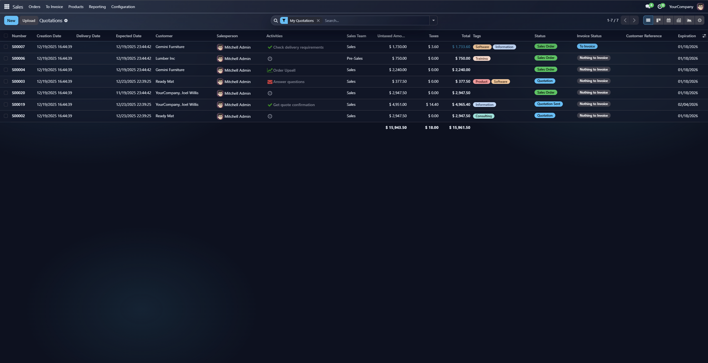

Backend Dark Glassmorphism Theme
A modern dark glassmorphism theme for the Odoo
backend. It blends translucent panels, soft blur, and cyan accents while
staying readable in low-light environments.
Odoo 18 Community
Backend Theme
No Data Changes
Key Features
- Deep glass background with layered gradients.
- Translucent panels for control panel, list, kanban, and chatter.
- Dark, high-contrast inputs and dropdowns with soft highlights.
- Muted separators and shadows tuned for dark surfaces.
- Minimal custom CSS, heavy use of Odoo primary variables.
Screenshot

Installation
- Copy the module into your custom addons path.
- Update Apps list and install "Backend Dark Glassmorphism Theme".
- Refresh the browser with assets debug if needed.
Configuration
The theme is enabled once installed. You can tweak colors and translucency
from the SCSS files:
static/src/scss/dark_glass_variables.scss for Odoo variables.static/src/scss/dark_glassmorphism.scss for glass styling.